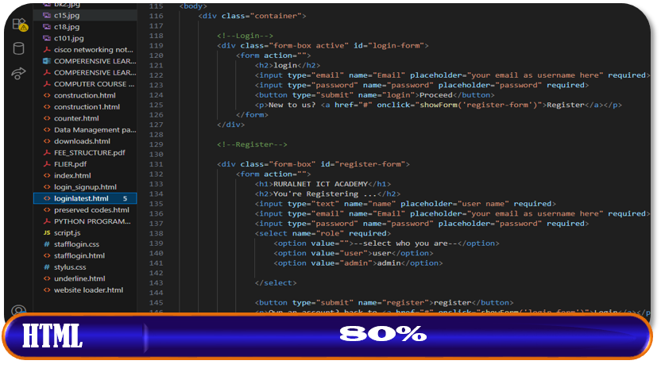
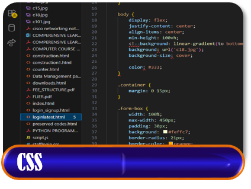
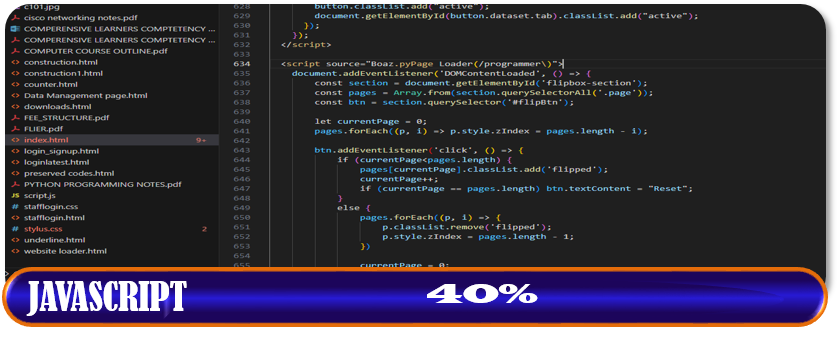
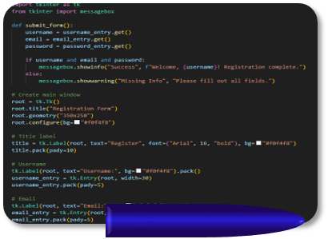
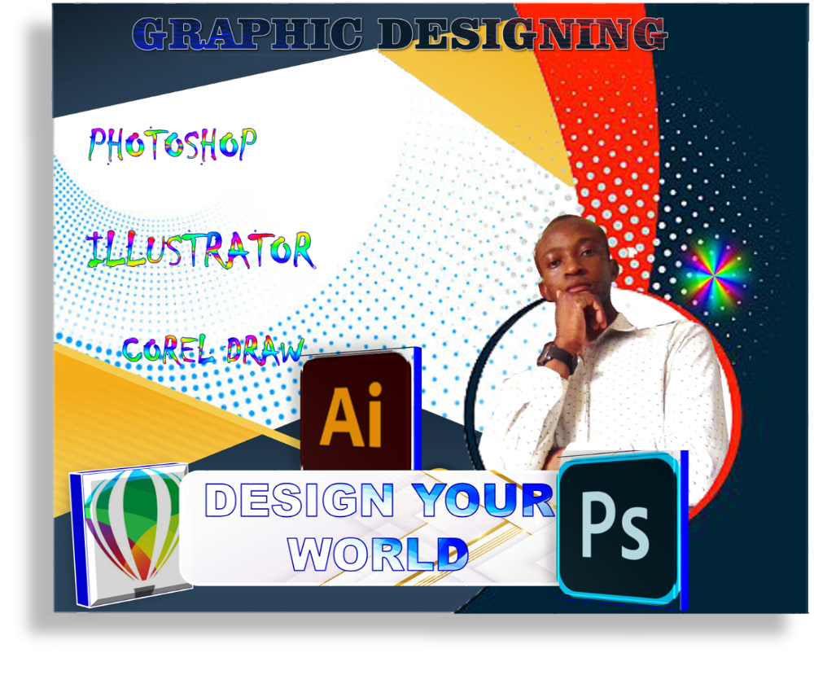
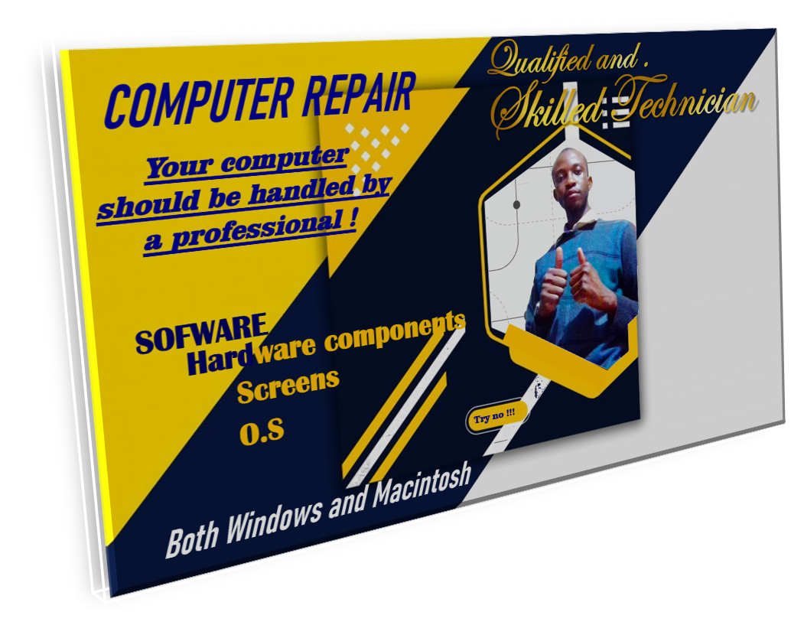
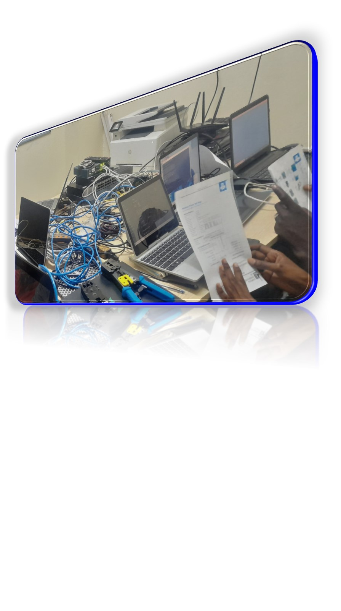

BACKGROUND INFORMATION
NAME: BOAZ OCHIENG
GENDER: MALE
DATE OF BIRTH: 24/09/1999
NATIONALITY: KENYAN
LANGUAGES: ENGLISH, KISWAHILI, LUO
BOX ADRESS: P. O. BOX 1-40606, UGUNJA
ACADEMIC QUALIFICATION
2022-2024: Institute Of Business studies
Diploma in Information and Communication Technology
2021-2022: Ugunja Technical and Vocational College
Certificate in Information and Communication Technology
2014-2017: Umina Mixed Secondary School
Kenya Certificate of Secondary Education (KCSE)
2021-2022: Ambira Primary School
Kenya Certificate of Primary Education
WORK EXPERIENCE
2025 - Now: Ruralnet ICT Academy
Responsibilities
ICT Technician
I.T Consultant
Network Administrator
Software Installation, Maintenance and Upgrades
Web Development and site maintenance
Computer Repair and Maintenance
Graphic Designing
Marketing
Academic circulars, programmes and Policy organizer/Planner
2018 - 2020: Saviour Computer Centre
Responsibilities
Cyber Operator
MArketing
Offering technical support
Responding to general querueries by clients
Selling stationeries
Major skilled areas
Markup Language (HTML)
Cascaded Stylesheet (CSS)
Javascript
Python
Graphic Designing
Computer Repair & Maintenance
Network Admin
REFEREES
1, 2, ...
Contact info
Email: boazkhoinange@gmail.com
Phone: +254 700886058